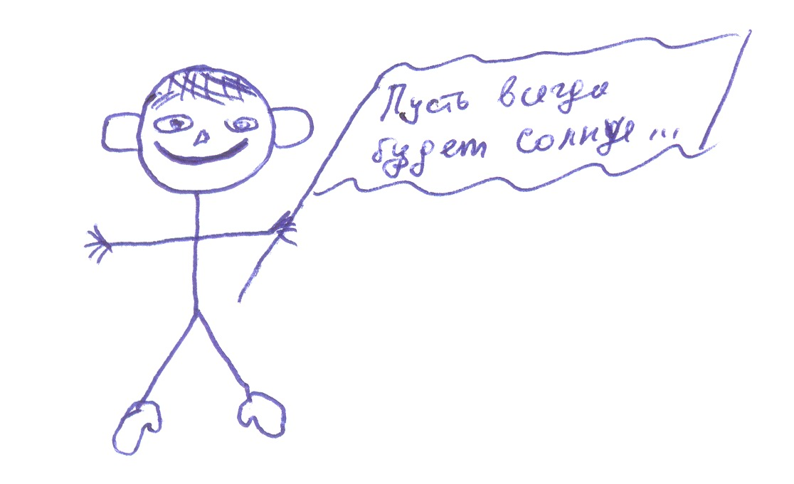

Камнев Сергей Николаевич.
Камнев Сергей Николаевич.
Дата рождения:
23 сентября 1980 г.
Дата смерти, диагноз/причина:
"Ты не спрашивай, не выпытывай, О Левкони, нам знать не дано какой конец тебе, а какой мне уготован богами".
Откуда родом / где пенаты:
С. Знаменка, Знаменский р-н Омской обл.
Адреса для связи (mail, адрес родителей и прочие контактные адреса и телефоны):
пос. Береговой, ул. Вокзальная 20 кв.1, kam111@yandex.ru
Любимый кусочек любимой песни. А так же любимый и не любимый цвета:
"Break it up, break it up, break it up my love…" (Scooter, "Break it up"). Любимые цвета: красный, синий, голубой, серый. Нелюбимый: чёрный.
Научный интерес / тема диплома, ФИО научного руководителя:
Научный интерес: начальный период шумерской истории; диплом: "Происхождение письма в Древней Передней Азии", нау. рук. - А. В. Хряков.
Понимание смысла жизни (зачем топчет эту землю):
Смысл жизни: карьера и любовь.
Отношение к аборту, смертной казни и эвтаназии:
Если аборт - это убийство, то минет - это людоедство? Смертная казнь конкретно за: педофилию, изнасилование, предательство национальных интересов России, убийство при отягчающих обстоятельствах, наркотики (наркоманов и наркодиллеров). Эвтаназия = самоубийство = тягчайший грех, поскольку человек не имеет права разорвать свою связь с Богом (religio - связываю).
Понимание большой и чистой любви (совокупляющуюся пару мытых слонов не предлагать):
Когда много-много её … и надолго-ооо…
Брак - это продолжение любви или насилие над ней?
Брак - это насильственное продолжение любви.
Сколько хочет детей (лично проверю выполнение этого желания :)
Четыре сыночка и лапочку дочку.
Впечатления об учёбе / последних пяти годах жизни:
Очень понравились 1ый и 4ый курсы, 2 и 3 как-то выпали, ни чем особым не отметились. Ну и 5ый вроде бы тоже ничего.
Впечатление от курса:
К сожалению, курс не дружный, у каждого человека на курсе своё "Я", может быть черезчур выраженное. Это возможно и мешает. Ну а в целом - мы очень сильный курс за последние и последующие несколько лет.
Самые запомнившиеся моменты жизни, проведённые с сокурсниками:
"Квинтовый скачёк" (апрель 2000, 1 курс, Колизей) и "Посвящение-2002" в "Атлантиде" (4 курс).
Любимый "прикол" во время обучения:
Сдача сессии 2 раза в год!!!
Любимая вредная привычка:
Водку пьянствовать и безобразие хулиганить.
Любимое ругательство (у кого ИХ нет - депортируем как врага народа):
А хрен его знает!
Как воспринимает себя:

О чём жалеет, чего не сделал(а) за эти пять лет:
Зачем жалеть того, чего не сделал?
О чём жалеет, что сделал(а) за эти пять лет:
В конце концов, всё что не делается - делается к лучшему.
Главная слабость (перед чем не может устоять):
Длинные белокурые вьющиеся женские волосы.
Планы (не больше трёх страниц :)
Вообще-то "планов громадьё", но в общем - это аспирантура и далее работа в сфере науки и высшего образования. А так же хотелось бы создать нормальную, очень-очень счастливую семью. Хотя можно например и Америку разрушить, найти Атлантиду, заняться экспортом снега из России в Сахару…
Пожелания сокурсникам:
Я всем желаю желать!